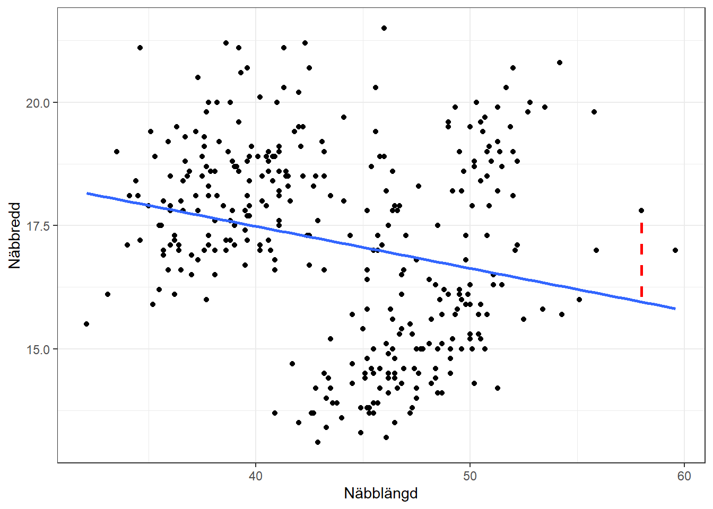
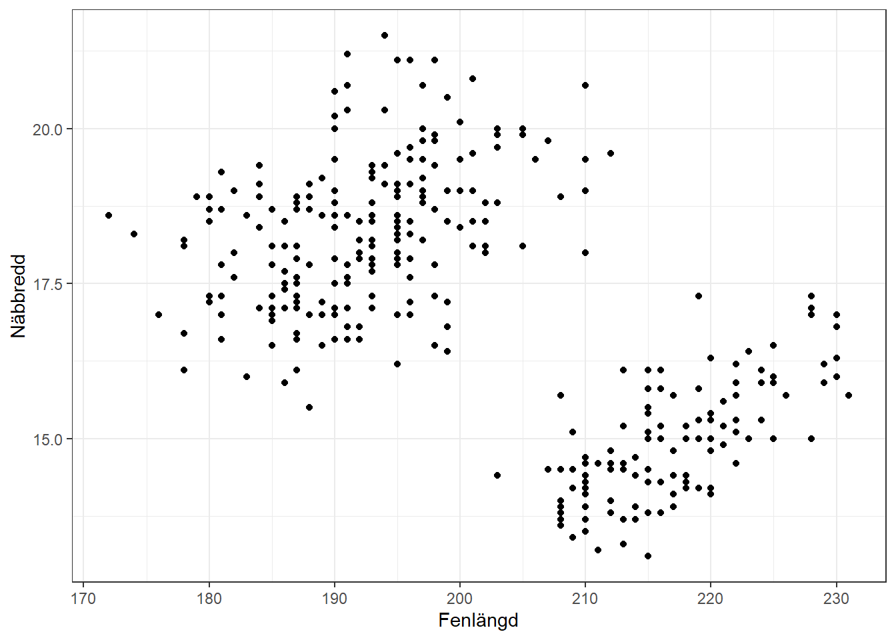
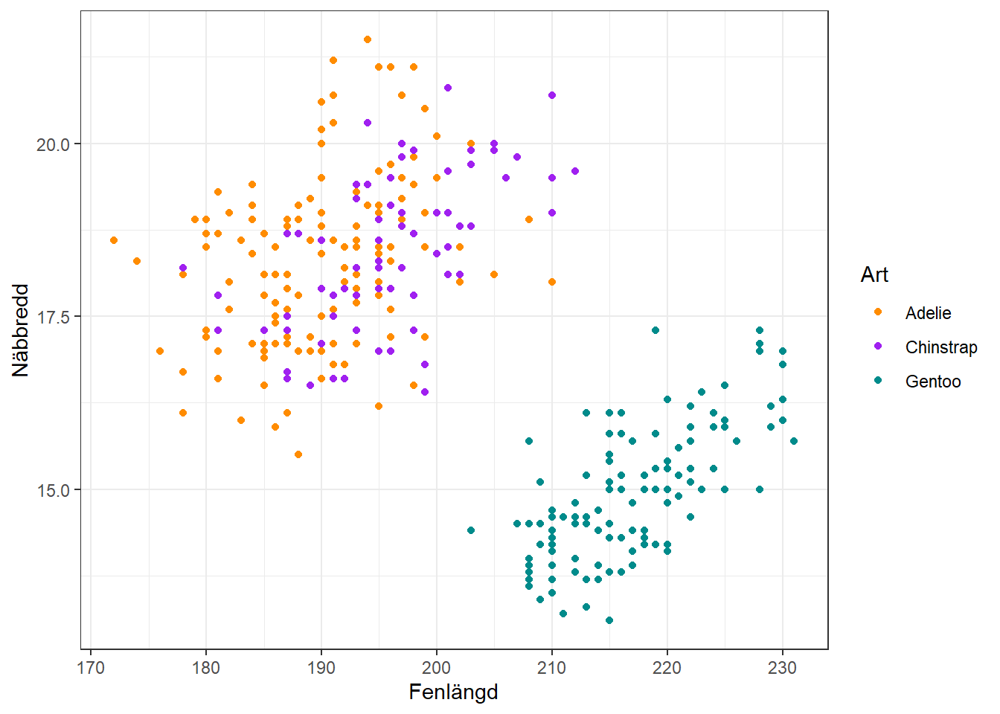

Vi kan anse variansanalys vara ett specialfall av en mycket mer flexibel metodik, regressionsanalys. Regression avser att undersöka sambandet mellan en responsvariabel (\(y\)) och en eller flera förklarande variabler (\(x\)). Den enklaste formen av regressionsmodell är den linjära modellen där vi antar att sambandet mellan en förklarande variabel och responsvariabeln är konstant ökande eller minskande, men regressionsmodeller kan också anpassas för icke-linjära samband.
Enkel linjär regression
Låt oss börja med den enkla linjära modellen när vi har en förklarande och en responsvariabel. Från matematiken kan vi uttrycka den räta linjens ekvation med \(y = kx + m\) och det är samma struktur på regressionsmodellen inom statistiken, dock med några andra beteckningar.
Skärningspunkten med y-axeln (\(m\)) kallar vi numera för interceptet och lutningen (\(k\)) heter fortfarande samma sak men mäter numera sambandet som den förklarande variabeln har med responsvariabeln. Inom regression har vi en sann modell för populationen där vi också tar hänsyn till de avvikelser som finns mellan varje enskilda observation och den räta linjen. I kapitel @ref(fig:penguins) visualiserades ett samband mellan två stycken kontinuerliga variabler likt:
Loading required package: tidyverse
Warning: package 'ggplot2' was built under R version 4.3.3
── Conflicts ────────────────────────────────────────── tidyverse_conflicts() ──
✖ dplyr::filter() masks stats::filter()
✖ dplyr::lag() masks stats::lag()
ℹ Use the conflicted package (<http://conflicted.r-lib.org/>) to force all conflicts to become errors
Loading required package: palmerpenguins
Warning in geom_segment(aes(x = 58, y = 20.88547 - 0.08502 * 58 + 0.1, xend = 58, : All aesthetics have length 1, but the data has 344 rows.
ℹ Please consider using `annotate()` or provide this layer with data containing
a single row.
Warning: Removed 2 rows containing non-finite outside the scale range
(`stat_smooth()`).
Warning: Removed 2 rows containing missing values or values outside the scale range
(`geom_point()`).

Spridningsdiagram som visar sambandet mellan näbbens längd och bredd på pingviner.
Som vi kan se i diagrammet kommer den anpassade linjen inte träffa exakt varje enskilda punkt och avståndet från regressionslinjen till respektive punkt, den rödstreckade linjen, kallas för modellens fel. Den sanna regressionsmodellen i populationen ser ut som följer:
\[\begin{align*}
Y_i = \alpha + \beta \cdot X_i + \varepsilon_i
\end{align*}\] där \(\alpha\) är modellens intercept, \(\beta\) är modellens lutning som beskriver sambandet mellan \(X\) och \(Y\), och \(\varepsilon_i\) är modellens felterm, det vill säga avståndet mellan observation \(i\) och punkten på regressionslinjen vid samma värde på \(X\). \(i\) är ett index som indikerar på observationen.
I praktiken kommer vi aldrig få kunskap om den sanna modellen då information som samlas in ofta är ett urval från populationen. Vi måste istället skatta modellen: \[\begin{align*}
\hat{Y} = a + b \cdot X_i
\end{align*}\]
Feltermen inkluderas nu inte i modellens uttryck, men vi kan skatta felet i modellen med hjälp utav dess residualer. \[\begin{align*}
e_i = Y_i - \hat{Y}_i
\end{align*}\]
Med hjälp utav dessa residualer kan vi sedan undersöka hur bra modellen är på att anpassa datamaterialet och kontrollera modellens antaganden.
Skatta en regressionsmodell i R
Om vi vill skatta en regressionsmodell i R används lm(). Denna funktion skattar en linjär modell och kan användas för alla “enkla” linjära modeller som vi vill skatta. Funktionen kräver två stycken argument; formula anger vilken modell som ska skattas med angivna variabler och data anger vilket datamaterial som variablerna finns i.
Resultatet från funktionen är ett objekt som innehåller många olika delar som vi kan nå med andra relevanta funktioner. De två viktigaste funktionerna som innehåller majoriteten av resultaten som vi är intresserade utav är summary() och anova().
summary(modell)
Call:
lm(formula = bill_depth_mm ~ bill_length_mm, data = penguins)
Residuals:
Min 1Q Median 3Q Max
-4.1381 -1.4263 0.0164 1.3841 4.5255
Coefficients:
Estimate Std. Error t value Pr(>|t|)
(Intercept) 20.88547 0.84388 24.749 < 2e-16 ***
bill_length_mm -0.08502 0.01907 -4.459 1.12e-05 ***
---
Signif. codes: 0 '***' 0.001 '**' 0.01 '*' 0.05 '.' 0.1 ' ' 1
Residual standard error: 1.922 on 340 degrees of freedom
(2 observations deleted due to missingness)
Multiple R-squared: 0.05525, Adjusted R-squared: 0.05247
F-statistic: 19.88 on 1 and 340 DF, p-value: 1.12e-05
Utksriften från denna funktion ger en översikt av skattningarna för parametrarna i modellen och en sammanfattande modellutvärdering. Utskriften kan delas in i fyra huvudsakliga delar:
Call visar funktionen som använts för att producera utskriften,
Residuals visar beskrivande statistik för de skattade residualerna från modellen,
Coefficients innehåller en tabell med regressionskoefficienter (skattade parametrar), deras medelfel, och tillhörande t-test för parametrarnas signifikans,
De sista tre raderna visar sammanfattande mått för modellen.
Vi kan också beräkna en ANOVA-tabell för regression men i detta läge kan vi använda funktionen anova() för att plocka ut denna information från den redan skattade regressionsmodellen.
anova(modell)
Analysis of Variance Table
Response: bill_depth_mm
Df Sum Sq Mean Sq F value Pr(>F)
bill_length_mm 1 73.47 73.473 19.884 1.12e-05 ***
Residuals 340 1256.36 3.695
---
Signif. codes: 0 '***' 0.001 '**' 0.01 '*' 0.05 '.' 0.1 ' ' 1
Denna tabell innehåller de olika källorna av variation som modellen innehåller, den förklarande variabeln och felet. Vi får också ett tillhörande F-test för modellens totala anpassning i denna utskrift till skillnad från den tidigare koefficient-tabellen.
Multipel linjär regression
Om vi har ett datamaterial med flera potentiella förklarande variabler kan vi skatta en multipel linjär regressionsmodell där alla variablerna inkluderas samtidigt. Detta medför att vi får en modell som, på gott och ont, tar hänsyn till eventuella påverkan mellan de olika förklarande variablerna och ger möjligheten att lägga till mer komplexa samband, till exempel interaktioner.
Formellt ser den generella regressionsmodellen ut som: \[\begin{align*}
Y_j = \alpha + \beta_1 \cdot X_{1, j} + \beta_2 \cdot X_{2, j} + \hdots + \beta_m \cdot X_{m, j} + \varepsilon_j
\end{align*}\] där index \(j\) nu är observationsindex och \(m\) anger hur många förklarande variabler som inkluderas i modellen.
Till exempel skulle vi vara intresserade av att lägga till ytterligare en variabel i vår modell över pingvinerna, flipper_length_mm.
Warning: Removed 2 rows containing missing values or values outside the scale range
(`geom_point()`).

Spridningsdiagram som visar på sambandet mellan fenlängd och näbbredd
Den utökade modellen anges i formula med ett + mellan de olika förklarande variablerna som ska inkluderas.
Call:
lm(formula = bill_depth_mm ~ bill_length_mm + flipper_length_mm,
data = penguins)
Residuals:
Min 1Q Median 3Q Max
-3.0875 -1.1351 -0.0724 1.0879 4.5167
Coefficients:
Estimate Std. Error t value Pr(>|t|)
(Intercept) 34.308407 1.219366 28.136 < 2e-16 ***
bill_length_mm 0.094050 0.020510 4.586 6.38e-06 ***
flipper_length_mm -0.105956 0.007963 -13.306 < 2e-16 ***
---
Signif. codes: 0 '***' 0.001 '**' 0.01 '*' 0.05 '.' 0.1 ' ' 1
Residual standard error: 1.56 on 339 degrees of freedom
(2 observations deleted due to missingness)
Multiple R-squared: 0.3794, Adjusted R-squared: 0.3757
F-statistic: 103.6 on 2 and 339 DF, p-value: < 2.2e-16
anova(modell)
Analysis of Variance Table
Response: bill_depth_mm
Df Sum Sq Mean Sq F value Pr(>F)
bill_length_mm 1 73.47 73.47 30.179 7.748e-08 ***
flipper_length_mm 1 431.04 431.04 177.049 < 2.2e-16 ***
Residuals 339 825.32 2.43
---
Signif. codes: 0 '***' 0.001 '**' 0.01 '*' 0.05 '.' 0.1 ' ' 1
Om vi jämför de två olika utskrifterna från de två modellerna ser vi att förklaringsgraden (Multiple R-squared) gått från ca 5 procent i den enkla linjära modellen till ca 37 procent i den multipla linjära modellen. Detta innebär att andelen av variation i responsvariabeln som modellen förklarar har ökat markant med tillägget av en ytterligare variabel.
Vi ser också att ANOVA-tabellen fått en annan struktur med den nya variabeln. Vi får en rad per förklarande variabel men tolkningen av dessa F-test är inte samma som t-testen i koefficienttabellen. Vi kan alltså inte använda enskilda F-test från ANOVA-tabellen för att undersöka huruvida en enskild parameter är signifikant, utan vi måste fortfarande använda t-testen för denna frågeställning. För att undersöka hela modellens signifikans kommer inte heller ANOVA-tabellen innehålla den information vi behöver då F-testen är uppdelade. Istället kan vi titta på den sista raden från summary() som innehåller testvariabeln (F-statistic) och tillhörande p-värdet (p-value) för F-testet.
Kategoriska variabler
En regressionsmodell är inte begränsad till enbart kontinuerliga förklarande variabler. Som tidigare nämnt är variansanalys ett specialfall av regression där vi har kategoriska faktorer/variabler men om vi också inkluderar kontinuerliga faktorer/variabler inom den metodiken kommer vi i praktiken genomföra en regressionsanalys. Vi kan för enkelhetens skull utöka den multipla linjära regressionsmodellen med kategoriska variabler som dock måste genomgå en förändring för att kunna skattas korrekt i modellen.
En kategorisk variabel kan transformeras till indikatorvariabler som indikerar på de olika kategorierna i den ursprungliga variabeln. Antalet indikatorvariabler som skapas styrs utav antalet kategorier och antar värdet 1 eller 0. Mer exakt skapas en färre indikatorvariabel än kategorier då om alla indikatorvariabler är 0 pekar kombinationen av värden på den kategori som “saknas”.
Till exempel skulle variabeln species som innehåller de tre pingvinarterna transformeras till indikatorvariabler enligt följande struktur: \[\begin{align*}
X_3 &=
\begin{cases}
1 ,& \text{om pingvinen är art Chinstrap}\\
0 ,& \text{annars}
\end{cases} \\
X_4 &=
\begin{cases}
1 ,& \text{om pingvinen är art Gentoo}\\
0 ,& \text{annars}
\end{cases}
\end{align*}\]
Detta kan R göra automatiskt i modellanpassningen givet att variabeln i datamaterialet är en factor.
Call:
lm(formula = bill_depth_mm ~ bill_length_mm + flipper_length_mm +
species, data = penguins)
Residuals:
Min 1Q Median 3Q Max
-2.15864 -0.59589 -0.07369 0.57685 2.94687
Coefficients:
Estimate Std. Error t value Pr(>|t|)
(Intercept) 3.013932 1.411061 2.136 0.0334 *
bill_length_mm 0.144433 0.018997 7.603 2.91e-13 ***
flipper_length_mm 0.051221 0.008466 6.050 3.85e-09 ***
speciesChinstrap -1.676891 0.217380 -7.714 1.39e-13 ***
speciesGentoo -6.017686 0.236344 -25.462 < 2e-16 ***
---
Signif. codes: 0 '***' 0.001 '**' 0.01 '*' 0.05 '.' 0.1 ' ' 1
Residual standard error: 0.9068 on 337 degrees of freedom
(2 observations deleted due to missingness)
Multiple R-squared: 0.7916, Adjusted R-squared: 0.7892
F-statistic: 320.1 on 4 and 337 DF, p-value: < 2.2e-16
anova(modell)
Analysis of Variance Table
Response: bill_depth_mm
Df Sum Sq Mean Sq F value Pr(>F)
bill_length_mm 1 73.47 73.47 89.355 < 2.2e-16 ***
flipper_length_mm 1 431.04 431.04 524.214 < 2.2e-16 ***
species 2 548.22 274.11 333.363 < 2.2e-16 ***
Residuals 337 277.10 0.82
---
Signif. codes: 0 '***' 0.001 '**' 0.01 '*' 0.05 '.' 0.1 ' ' 1
I utskriften får vi nu ytterligare två regressionskoefficienter som kopplas till respektive indikatorvariabel. Tolkningen av dessa koefficienter görs i jämförelse med referenskategorin, alltså den kategori som saknas. I detta fall blir tolkningarna i jämförelse med arten Adelie.
Interaktioner
Den sista enkla utökningen vi skulle kunna lägga till i vår linjära regressionsmodell för att anpassa responsvariabeln bättre är interaktioner, alltså ett sätt att modellera synergier mellan olika variabler. Rent matematiskt blir en interaktion en “ny” variabel där de grundvariabler som inkluderas i modellen multipliceras med varandra.
Ett tydligt exempel på en potentiell interaktion kan ses i figur @ref(fig:flipper). Tolkningen av punktsvärmen i sin helhet antyder att sambandet mellan de två variablerna är negativt, och detta visas också i koefficienten från den första modell som skattades med fenlängd som en förklarande variabel. Detta samband verkar inte vara logiskt så det verkar vara något skumt som finns gömt i datat.
Punkterna ligger i två stycken grupperingar och sambandet inom varje grupp ser istället positivt ut. Vi kan visualisera vad som händer om art också inkluderas i diagrammet som en grupperingsvariabel.
ggplot(penguins) +aes(x = flipper_length_mm, y = bill_depth_mm, color = species, group = species) +geom_point() +theme_bw() +labs(x ="Fenlängd", y ="Näbbredd") +scale_color_manual("Art",values =c("darkorange","purple","cyan4") )
Warning: Removed 2 rows containing missing values or values outside the scale range
(`geom_point()`).

Spridningsdiagram över fenlängd och näbbredd grupperat på art.
Inom vardera art verkar de två variablerna istället ha ett positivt samband. Detta fenomen kallas för Simpson’s paradox. Vi bör alltså inkludera interaktionen mellan art och fenlängd (och även interaktionen mellan art och näbblängd) i modellen.
Ett enkelt sätt att skapa interaktioner mellan variabler i en formel är att använda * istället för +. I detta fall vill vi endast ha interaktionen mellan de två kontinuerliga variablerna och den kvalitativa variabeln species så vi kan använda () för att, likt inom vanlig algebra, skapa ett förenklat uttryck.